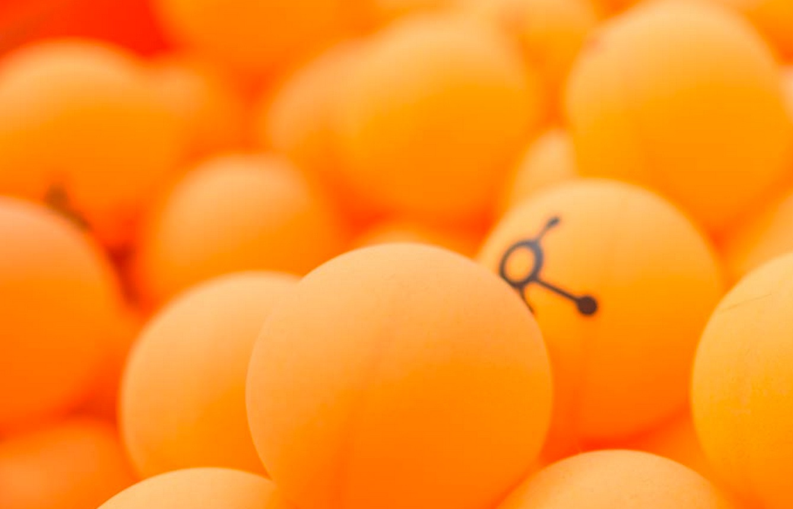
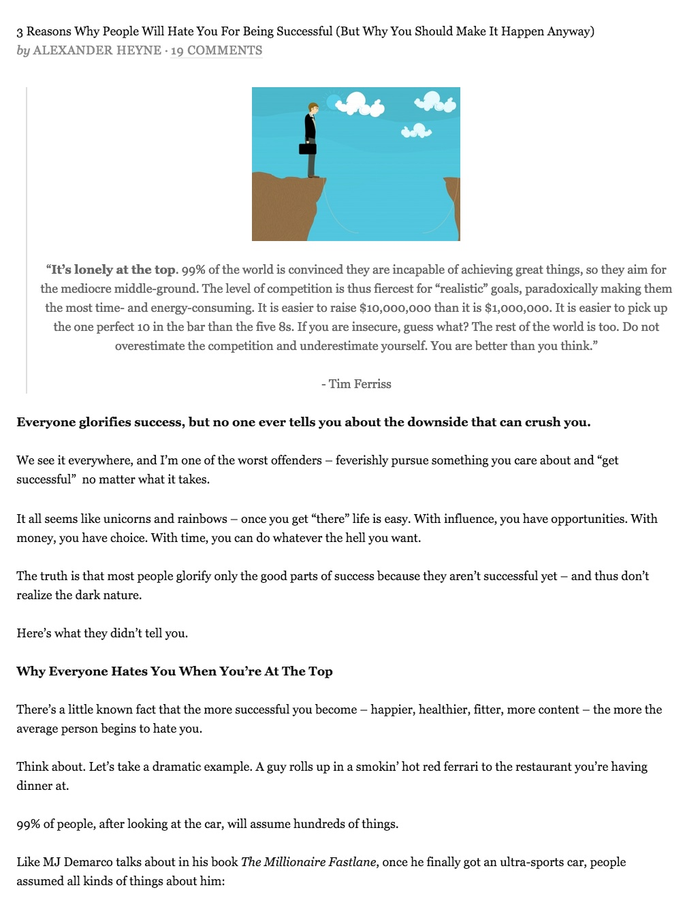
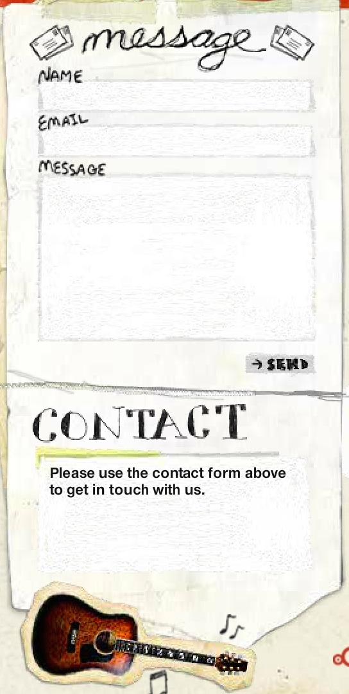

Below is my list of components:
I really like the idea of having a "sticky" header. I don't like being on a site and having to scroll all the way to the top for the navigation options. A good example of a sticky header that I like is for a brand called Hammerhead. Hammerhead is a device made for cyclists that attaches to their bikes like a compass and supplies the user with routes. The goal of their site is to inform cyclists of their product. The site itself is pretty basic but if you were unfamiliar with the product you would have a hard time figuring out what it does. What I like about their header is that not only does it move as you scroll but it fades out while scrolling and appears once you stop scrolling.
http://hammerhead.io/At a previous job I would always receive emails from HubSpot. These emails would offer tips, tricks, webinars and information on products they had available. I would almost always find something interesting and end up clicking. What I noticed not only about their emails but there website was their call to action buttons, links etc. I guess it makes sense, they are in the marketing business.
 http://www.hubspot.com/It's important to have a design that is to the point. You never want users clicking around for long periods of time looking for something. I am a HUGE online shopper, mainly because I hate wasting time in stores and dealing with sales staff. Usually I know exactly what I want and just want to get it and be done. I feel the same way about building a website. Meundies.com is a website just for what you think its for, underwear. It's so straight to the point that it's in the name. There is a large slideshow of images once you land on the site, the images show a variety of products for both men and women. You can select options from the header, select shop now on the slideshow or scroll down and click shop all products.
https://www.meundies.com/Agencies almost always have great websites, I'm sure it's one of the first places potential clients look before choosing an agency. Blitz Agency has a really interesting website. It's hard to describe but it seems like there is a lot of animation work involved.
http://www.blitzagency.com/For years I have been a fan of Mail Chimp. I first used the site after I graduated from college and got my first job at an apartment community. I started a community newsletter and used Mail Chimp to send it out. It's so easy to use and it's FREE. Their goal is to help users create email campaigns and build lists that they can charge them for. It's really nice when companies show you the faces behind the brand and I like the way their "About Us" page does that.
 http://mailchimp.com/about/
http://mailchimp.com/about/
What first caught my attention about the Milk The Pigeon blog was the name. I am always a sucker for an interesting name. With that being said, it's not what I expected. This blog is about life for lost people in their twenties. Being someone in my 20s I can relate and enjoyed reading the articles. Design doesn't seem like it was important when this site was created because there isn't much to it. The message seems to be the most important aspect and I can understand that.
 http://milkthepigeon.com/If you have a theme for your site, it's important to stay true to the theme. But it's also nice to have some fun. Digital Base is an IT company in Belgium. I thought their message in a bottle image on their "Contact Us" page to be a nice touch. IT can be a serious field and their site stays true to that with dark colors. The message in a bottle lightens the mood
http://www.digitalbase.eu/Music City Unsigned is a site dedicated to unsigned artists in the Nashville artists. It's design is very "Rock and Roll" with rustic rough touches. It has too much going on for my liking but I really liked the contact us page. It looks like a handwritten note next to a polaroid picture.
 http://www.musiccityunsigned.com/#/contactAs I mentioned previously I am a fan of online shopping. Gilt.com is one of my favorite sites for shopping. I tend to use the app most of the time, but will use the site when at home. Their login page always has a different image when I login. Usually the images are dependent on the season and trends. I like how clean and simple it is. There is a small box in the center of the page directing the user to sign in with their email address and password. Underneath the input boxes the user can click a link if they forgot their password, login with their facebook account or sign up for an account. This site is for people who like designer clothing but don't like the designer price tag. Gilt is a site that sells designer clothing at a discounted price. The sales change daily, offering a variety of items for babies, men, women and home.
https://www.gilt.com/loginFooters don't need a lot of content, too many words or links could be confusing. DailyTekk has a footer that I really like. It's clean and simple, just the basic links. The site is for people interested in Tech news, it even features product reviews. The site itself reminds me a lot of Mashable with the clean lines, white background and a simple shade of blue. The white really lets the article images jump out at the viewer.
 http://dailytekk.com/
http://dailytekk.com/